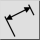
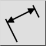
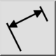
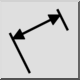

Rotated (Linear)
Toolbar / Icon:
 

Menu: Dimension > Rotated (Linear)
Shortcut: D, L
Commands: dimlinear | dimrotated | dl
This is an automatic translation.
Toolbar / Icon:
 

Menu: Dimension > Rotated (Linear)
Shortcut: D, L
Commands: dimlinear | dimrotated | dl
Създава завъртени (линейни) размери. Линейните размери обикновено се използват за измерване на вертикални или хоризонтални разстояния, но могат да измерват и разстояния с всякакъв друг ъгъл.